Kháng chiến toàn dân, toàn diện; tư tưởng về chủ nghĩa xã hội, Đảng cầm quyền, Nhà nước của dân.
Việt BắcPhủ Chủ tịch
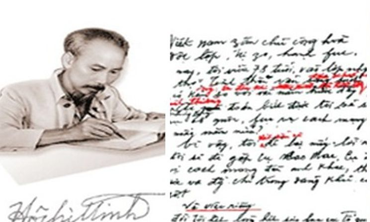
Bản Di chúc của Chủ tịch Hồ Chí Minh
Tên gọiHồ Chí Minh
10ảnh tư liệu
3trích dẫn
5câu hỏi
Tổng quan thời kỳ
6/1/1946: Tổng tuyển cử bầu Quốc hội đầu tiên
6/3/1946: ký Hiệp định Sơ bộ
9/11/1946: Quốc hội thông qua Hiến pháp đầu tiên
Chống “giặc đói, giặc dốt, giặc ngoại xâm”
Sách lược “dĩ bất biến, ứng vạn biến”
19/12/1946: ra Lời kêu gọi toàn quốc kháng chiến
7/5/1954: chiến thắng Điện Biên Phủ
Kháng chiến toàn dân, toàn diện, lâu dài, dựa vào sức mình là chính
10/1947: viết Sửa đổi lối làm việc
2/1951: Đại hội II, Đảng ra hoạt động công khai
Nhà nước của dân, do dân, vì dân
Thời kỳ từ 1945 đến 1969Việt Bắc → Phủ Chủ tịchHồ Chí Minh
9/1960: Đại hội III của Đảng
Xây dựng chủ nghĩa xã hội ở miền Bắc
Đấu tranh giải phóng miền Nam, thống nhất đất nước
17/7/1966: “Không có gì quý hơn độc lập, tự do”
Chủ nghĩa xã hội và con đường quá độ ở Việt Nam
Đạo đức cách mạng; Đảng cầm quyền
10/5/1965: bắt đầu viết Di chúc
2/9/1969: qua đời tại Hà Nội
Di chúc kết tinh tư tưởng, đạo đức, tâm hồn của Người
Các mốc sự kiện
Tổng tuyển cử bầu Quốc hội đầu tiên
ký Hiệp định Sơ bộ
Quốc hội thông qua Hiến pháp đầu tiên
ra Lời kêu gọi toàn quốc kháng chiến
viết Sửa đổi lối làm việc
Đại hội II, Đảng ra hoạt động công khai
chiến thắng Điện Biên Phủ
Đại hội III của Đảng
bắt đầu viết Di chúc
“Không có gì quý hơn độc lập, tự do”
qua đời tại Hà Nội
Ảnh tư liệu
1
Toàn quốc kháng chiến (1946)
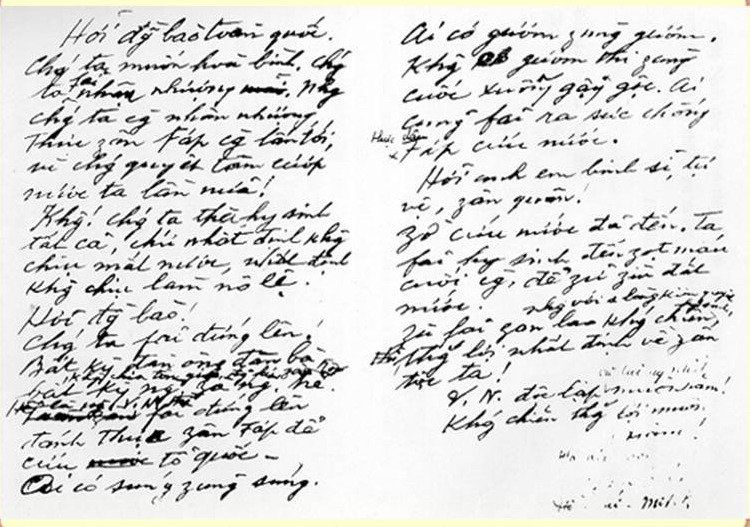
Bút tích Lời kêu gọi toàn quốc kháng chiếnThủ bút của Chủ tịch Hồ Chí Minh, ngày 19/12/1946.
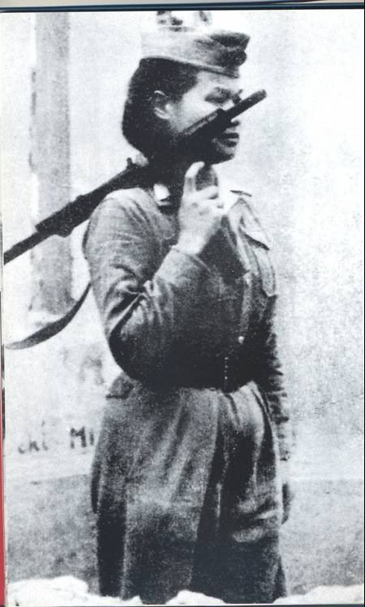
Nữ tự vệ Sài GònPhụ nữ cũng cầm súng đánh giặc, thể hiện tinh thần toàn dân kháng chiến.
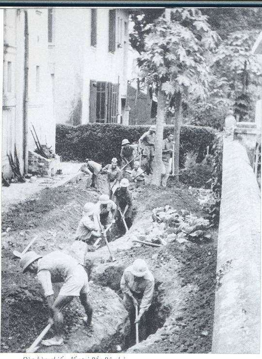
Đào hào chiến đấu tại Bắc Bộ phủ, Hà NộiQuân và dân Thủ đô chuẩn bị chiến đấu trong những ngày đầu toàn quốc kháng chiến.
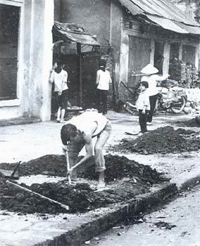
Nhân dân đào hầm, hào kháng chiếnKháng chiến toàn dân, toàn diện: nhân dân tham gia xây dựng làng, phố chiến đấu.
Tư tưởng chiến tranh nhân dân: “Bất kỳ đàn ông, đàn bà, bất kỳ người già, người trẻ, không chia tôn giáo, đảng phái, dân tộc. Hễ là người Việt Nam thì phải đứng lên đánh thực dân Pháp để cứu Tổ quốc.” (Lời kêu gọi toàn quốc kháng chiến)
2
Từ Biên giới đến Điện Biên Phủ (1950 – 1954)
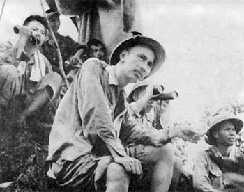
Chủ tịch Hồ Chí Minh tại mặt trận Biên giới (1950)Người trực tiếp ra mặt trận theo dõi, chỉ đạo Chiến dịch Biên giới.
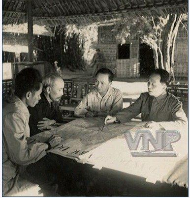
Bàn kế hoạch tác chiến Chiến dịch Điện Biên PhủChủ tịch Hồ Chí Minh cùng các đồng chí Trường Chinh, Phạm Văn Đồng, Võ Nguyên Giáp (Đông Xuân 1953 – 1954).
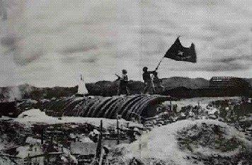
Lá cờ “Quyết chiến quyết thắng” trên nóc hầm Đờ Cát (7/5/1954)Chiến thắng Điện Biên Phủ buộc thực dân Pháp ký Hiệp định Giơnevơ, kết thúc thắng lợi cuộc kháng chiến chống Pháp (cảnh quay do nhà quay phim Liên Xô Rô-man Các-men dựng lại sau chiến thắng).
3
Xây dựng Đảng cầm quyền, xây dựng chủ nghĩa xã hội
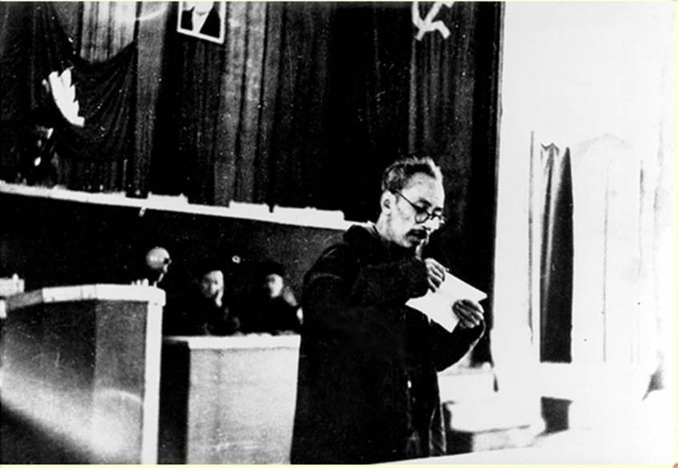
Đại hội đại biểu toàn quốc lần thứ II của Đảng (2/1951)Chủ tịch Hồ Chí Minh đọc Báo cáo chính trị. Đại hội đưa Đảng ra hoạt động công khai với tên Đảng Lao động Việt Nam, thúc đẩy kháng chiến đến thắng lợi.
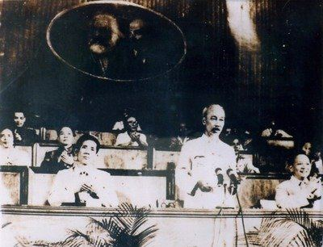
Đại hội đại biểu toàn quốc lần thứ III của Đảng (9/1960)Đề ra đường lối cách mạng ở hai miền: xây dựng chủ nghĩa xã hội ở miền Bắc, đấu tranh giải phóng miền Nam.
Những nội dung được bổ sung, hoàn thiện: chủ nghĩa xã hội và con đường quá độ ở Việt Nam; nhà nước của dân, do dân, vì dân; xây dựng Đảng trong điều kiện Đảng cầm quyền; phát triển kinh tế, văn hóa, nâng cao đời sống nhân dân.
4
Bản Di chúc (1965 – 1969)
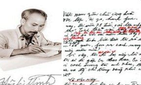
Bản Di chúc của Chủ tịch Hồ Chí MinhNgười bắt đầu viết Di chúc ngày 10/5/1965, tiếp tục bổ sung, sửa chữa đến năm 1969. Di chúc được công bố sau khi Người từ trần ngày 2/9/1969 (ảnh ghép chân dung và bút tích).
Phim tư liệu
Phim tư liệu đang được cập nhật
Trích dẫn, tác phẩm
Trích dẫn · Thời kỳ từ 1945 đến 1969
Bấm vào trích dẫn hoặc ảnh để phóng to
01
“
Không! Chúng ta thà hy sinh tất cả, chứ nhất định không chịu mất nước, nhất định không chịu làm nô lệ.
02
“
Không có gì quý hơn độc lập, tự do!
03
“
Điều mong muốn cuối cùng của tôi là: Toàn Đảng toàn dân ta đoàn kết phấn đấu, xây dựng một nước Việt Nam hòa bình, thống nhất, độc lập, dân chủ và giàu mạnh, và góp phần xứng đáng vào sự nghiệp cách mạng thế giới.